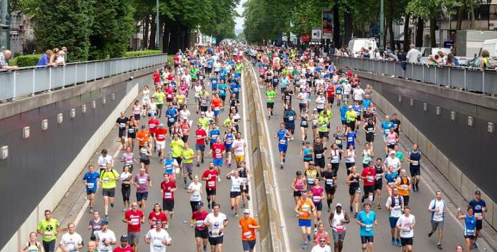
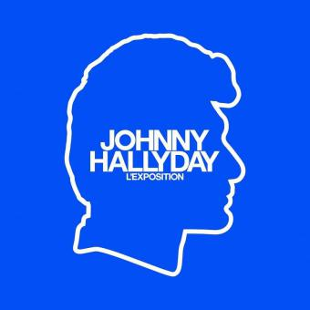

A la UNE
Actu
20 km de Bruxelles et circulation
-
le 20 mai

-
le 20 mai
Le dimanche 28 mai 2023, Bruxelles accueille les coureurs des "20 km de Bruxelles" (départ à partir de 10h). Certains axes routiers seront totalement soustraits à la circulation.
Prochains Evenements
Johnny Hallyday l'Exposition
-
23 mai

-
23 mai
Du 20 décembre 2022 au 15 juin 2023 à Brussels Expo. Johnny Hallyday l'Exposition offrira au public une découverte inédite de l'œuvre et de la vie de Johnny Hallyday.
Newspaper
Télécharger notre newspaper
ICIEvenements en cours
Fête des marchés
-
23 mai
-
23 mai